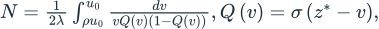

整体概括
先分清训练方法与训练环境
CAMG-II 是跨购物、代码修复、自动研究、企业知识工作和视觉网页开发的长程环境；CAMP-II 则用异步在策略蒸馏训练共享的一套学生策略。输入是当前可见的任务、工具观察与上下文，输出是任务响应及读写文件等操作；历史不会自动装回新窗口，继续行动靠学生主动取回信息。
对照原文证据
To study this question, we introduce Coding Agent Memory Gym II (CAMG-II) , a suite of long-horizon agentic-RL environments spanning Shop, Coding, AutoResearch, General, and Visual. Across all five environments, CAMG-II pairs each native task interface with ordinary Bash access and an episode-persistent workspace. Agents can therefore create, revise, search, and reuse files as memory throughout an episode.We also introduce Coding Agent Memory Post-Training II (CAMP-II) , which trains a single policy jointly across all five environments with fully asynchronous OPD to learn this file-based memory behavior directly from a frozen teacher with a prior for file operations. Task-reward training of file-based memory asks one question, whether the student’s pre-training prior makes the behavior reachable by exploration. Distillation asks two. The student has to emit meaningful memory operations, and the frozen teacher has to judge what those operations write.After a valid write, the environment replaces the active message history with the fixed task and tool instructions plus a neutral instruction naming the continuation path. It does not insert the file contents into the new context. The workspace remains mounted. The policy can recover selected information through a later ordinary file read.主结果是任务面板上的平均分
CAMP-II 在研究面板的平均分 64.6，高于同样使用文件、但靠任务奖励训练的 CAMP-I 的 54.2；也好于作者列出的记忆学习基线；附录五个训练种子均值 64.9、标准差 0.5。这个平均并不是逐题同口径的成功率：Visual 项保留评分而非直接二值化。
对照原文证据
CAMP-II attains the highest average success rate, 64.6% versus 54.2% for CAMP-I, and the same comparison holds across five training seeds, where the five-domain mean is 64.9 with a standard deviation of 0.5 (Table 8 ),The Visual column keeps the score itself, multiplied by 100 and averaged over the whole panel, with an episode that ends without a submission counting as zero.Research gap
低覆盖和低质量教师信号是两个问题
专用协议不熟悉时，学生很少采样到有意义的记忆动作，教师很难直接指导没出现的动作；对出现但教师赋予更低概率的 token，负优势只会压低这一采样 token，并没有提供应替换成的笔记。作者因此把接口作为实验变量，而不是只调整蒸馏损失。
对照原文证据
However, this weakens the distillation on both sides: the teacher cannot give useful guidance on an interface it has never used, and the student samples too few meaningful memory actions for that guidance to take effect [ 13 ] . Moreover, unfamiliarity with the tool produces the negative-advantage problem: the teacher’s scores push the student away from the memory behavior being taught without indicating the behavior that should take its place, which leaves training unstableThe objective sets the estimator and the teacher is frozen. The one design variable left is the interface the supervision passes through. Supervision arrives only inside an intersection: the action must be one the student emits on its own and one whose consequence the teacher can judge.借用熟悉动作，不等于行为已在预训练中学会
普通文件写入让学生与教师在同一种可执行操作上相遇；但何时记录、应保留哪条证据、何时读回仍是要学的策略。论文区分了只给冻结策略加外部存储的推理架构，与通过 token 监督改变任务策略；这不是对所有记忆框架的查新结论。
对照原文证据
What the intersection constrains is the action, not what is written. What to retain and what to recover, and when to do either, can all be behavior neither model has. The intersection is necessary but not sufficient: the chosen action must also leave state that persists beyond the active context and can be read back, which is why we do not supervise ordinary turns of dialogue.All four are inference-time layers: the agent queries a store that sits outside the weights, and the task policy itself is never trained for the memory behavior. CAMP-II trains the task policy itself, and its memory is kept in ordinary files that the teacher can read as well.算法主线

原图由 arXiv 加载；若未显示，可打开下方原图链接。
跟着原图读
- 按回合号读左边
先看 (a) 第 32 回合记录的 CSS-only 与 NO HTML body markup；横线标第 33 回合替换。随后 (b) 先列工作区，再读笔记。保留下来的不是旧对话本身。
- 到右侧核对任务产物
(c) 的页面导航可看到产品、系列、比较等入口，与左侧列过的计划相呼应。它把任务产物与记忆内容的用途连起来，但图中不是完整评测记录。
单个训练后期案例，不是测试分布的平均值；截图也无法认证所有交互能工作。
跨窗口保留文件，旧对话不直接回填
每回合使用隔离的持久工作区。任务产物仍在，但只有指定记忆目录内的常规文件计入策略记忆。默认在边界前写有效的 CONTINUATION.md；切换后保留固定任务与工具指令并提示路径，不插入文件内容；读回是学生另行采样的动作，也占响应预算。其他记忆文件可按需组织。
对照原文证据
Each episode receives a fresh private workspace that remains mounted across policy responses and context replacement. Only regular files below .agent_memory/ count as policy memory.At that point, the policy must create or update .agent_memory/CONTINUATION.md through an ordinary filesystem response. This response consumes one action slot and is sampled and trained like every other policy response.After a valid write, the environment replaces the active message history with the fixed task and tool instructions plus a neutral instruction naming the continuation path. It does not insert the file contents into the new context. The workspace remains mounted. The policy can recover selected information through a later ordinary file read. It may also maintain other files under .agent_memory/ and refer to them from the continuation file.教师只打分学生实际看见的前缀
生成侧用当时发布的学生权重执行任务，录下 token、当时可见的前缀和行为概率。冻结教师对相同前缀中学生已经采样的响应 token 打分，不替学生改写，也看不到私有标签、评分答案或学生未读取的工作区内容。完成的轨迹入队，学习侧异步更新学生后再发布。
对照原文证据
The prefix s_{i} is taken from the invocation the student actually produced: its visible context, token positions and causal mask [ 34 ] , including invocations after a context replacement, together with the read observations the student recorded.The distillation teacher scores the invocation the student actually produced, so private labels, hidden rubric answers, and unread workspace contents never enter it.Completed episodes enter a persistent queue, from which the learner assembles minibatches without waiting for the slowest episode of a batch (Algorithm 1 ). Each token retains the behavior log-probability recorded at generation, the denominator of the importance ratio in Eq. 4 . Weights are published to the replicas after every learner round.训练对响应求梯度，部署时没有教师
写入、读文件的调用与普通任务响应共用监督；读回的内容是环境观察，不会被当作一次新的学生写入再蒸馏，指令和填充也被排除。主方法关闭任务奖励损失与学习到的 critic；测评判分不是学生训练时额外可见的答案，部署只运行更新后的学生策略。
对照原文证据
where \mathcal{B}^{m} excludes instructions, observations and padding, and m indexes the memory interface in the controlled comparisons.A file read is itself a sampled action, so the contents it returns are observations and a write is not supervised a second time. There is no per-episode reweighting, so long episodes contribute proportionally more tokens.The pure-OPD realization disables the task-reward loss and the learned critic, so task-return statistics do not enter its actor gradient.The frozen teacher scores only what the student can see, and only the student remains afterwards.关键公式
先看教师差值，再看异步校正
对数概率差比较冻结教师和当前学生在同一记录前缀下对同一 token 的偏好，差值本身停梯度。另一个比值比较当前学生与实际采样学生，它处理队列中的策略滞后。两者的分母来自不同时间的学生状态，不宜混用；实际训练还对信号和比值设数值保护。
对照原文证据
For a sampled token x at prefix s , let p_{\theta}(x\mid s) and q(x\mid s) be its probabilities under the current student and frozen teacher. Sampling from the student makes the reverse-KL gradient a policy gradient whose per-token signal is the teacher–student log-ratio,The rollout workers generate with the last published weights \theta^{-} while the learner updates \theta , so episodes from all five environments reach the learner after later weights are published. The update is corrected by the importance ratio \rho_{i}=p_{\theta,i}/\mu_{i} , taken against the clipped value \bar{\rho}_{i}=\operatorname{clip}(\rho_{i},1-\epsilon,1+\epsilon) . Over the sampled response tokens \mathcal{B}^{m} of an optimizer minibatch, the objective isThe objective rows instantiate Eq. 4 , with the clamps and the dual-clip bound as numerical safeguards.附录的代价公式数的是监督出现次数
附录把一个固定前缀约成两个可选 token，定义有效 logit 步长并积分求平均收敛代价。稀有动作近似针对学生初始覆盖极低而教师目标与相对收缩固定的分支；它不是参数网络每轮的计算量，也不直接预测 GPU 时数或全词表训练收益。
对照原文证据
Fix one prefix s and reduce it to two tokens, u preferred by the teacher and y not. Write z=\log\frac{p_{\theta}(u\mid s)}{p_{\theta}(y\mid s)} for the student’s log-odds and z^{*} for the teacher’s, so Q=\sigma(z)=p_{\theta}(u\mid s) with initial value Q_{0} and target Q^{*}=\sigma(z^{*}) , and letLet \lambda be the effective logit step per supervised occurrence, let N count supervised occurrences of the prefix’s tokens, not optimizer steps, and call the token learned once z^{*}-z has closed to a fraction \rho of u_{0} .The derivation works at the level of this prefix’s logits, not its parameters: what the parameters couple across prefixes, together with repeated supervision within a round and the optimizer’s normalized step, is absorbed into \lambda , which is not the learning rate. The result is a proportionality: it fixes which quantities sit in the numerator and which in the denominator, and \lambda only scales it.a claim that it holds verbatim for every K would need that separation carried through, which we do not do here.式 3：教师与学生对同一采样 token 的对数概率差
对同一可见前缀，教师比学生更偏好已采样 token，则差为正。例如教师概率 0.4、当前学生 0.2，分值是 ln 2，约 0.693 nats；它不是对整个动作正确性的奖励。
符号与实现提醒
- qᵢ
- 冻结教师在前缀下对 token i 的概率。
- pθ,ᵢ
- 学习时当前学生对同一 token 的概率。
- sg
- 停止梯度，差值作为权重而非一条直接反向传播路径。
教师和学生必须在同一可见调用前缀上打分；负差值不包含应替换成什么内容。
式 4：裁剪当前权重与行为权重的比例
使用行为概率作分母，把冲出区间的有利更新截住。教学示例：正优势约 0.693、比值 1.5、裁剪上界 1.2 时，取较小项 1.2×0.693≈0.832；若小批只这一 token，前面的负号令损失约为 −0.832。
符号与实现提醒
- ρᵢ、ρ̄ᵢ
- 当前量除以轨迹记录的行为概率；后者是前者限幅版。
- Aᵢ
- 已分离梯度的采样 token 优势。
- Bᵐ
- 记忆接口 m 下小批中被监督的响应 token 集。
这是论文中的主式，不包含附录另述的所有数值保护；不要把它换成逐回合平均，也不要把读回的观察算入响应损失。
式 7：单前缀二元模型的平均收敛代价

沿 logit 缺口从初始值到目标比例逐段积分。某一段学生覆盖越低，其监督机会越稀薄，该段对达到目标的代价贡献越重。附录表中初始概率 0.001、教师 0.5、缺口收缩至一半时，积分给 λN=82.7，稀有渐近式给 72.4。
符号与实现提醒
- N
- 监督前缀出现的次数，在均场连续近似中计算。
- λ
- 有效 logit 步长，不是优化器的学习率。
- u₀、ρ、v
- 初始 log-odds 缺口、还剩的相对比例与积分中的缺口。
- Q(v)、z*
- 给定缺口时学生发出目标项的概率，与教师的固定 log-odds。
单前缀、二 token、固定教师的平均漂移；这个积分不等于真实多词表的运行步数。
式 9：稀有目标下的代价近似
初始发出目标 token 的概率趋于零时，主导项取决于初始覆盖与 log-odds 差。可用原表反查近似何时失真：学生 0.001 而教师也仅 0.0012 时，附录积分给 λN=329.9，渐近值却是 2739.4。
符号与实现提醒
- Q₀、Q*
- 学生初始覆盖概率与冻结教师的目标概率。
- u₀
- 初始 log-odds 差，不是教师打分正确率。
- o(1)
- 在所述极限下趋零的相对剩余项。
需教师覆盖和目标相对收缩保持固定、初始学生极稀有等条件；接近教师时看积分或近恒覆盖分支，不把该缩放律外推成所有接口都成立。
实验怎么做
训练次数、面板与计算成本
主设定每轮 64 个回合、100 个学习轮，合计 6,400 次回合暴露；五域配比均衡，暴露不是独立任务数。各域共享 128 条测试任务，总计 640 条。CAMP-II-4B 作者报约 250 GPU 小时、八张卡，分别承担学生学习、轨迹生成和教师服务；附录还提醒学习轮不等于一个优化小批步。
对照原文证据
All trainable methods use fresh Qwen3.5-4B and Qwen3.5-9B students [ 46 ] for 100 learner optimizer updates with 64 episodes per update, totaling 6,400 episodes per training run, under the equal mixture over Shop, Coding, AutoResearch, General, and Visual, trained with fully asynchronous OPD and no task rewards. Appendix C gives the remaining training details.Trainable methods are trained using the CAMG-II train split and evaluated using the CAMG-II test set, and all methods use the same 128 test tasks per domain, giving 640 tasks in total.Training CAMP-II-4B took about 250 GPU-hours on eight GPUs, four training the policy, two generating rollouts and two serving the frozen teacher, across the 100 learner rounds.An update denotes one learner round, not a single optimizer-minibatch step.比较同为文件的奖励学习与不同记忆协议
CAMP-I 保持文件记忆、用任务奖励而不是教师；记忆协议基线包括 MemOPD、ACM、HELM 与 Hy-Memory，并明确列出 MemOPD 是否有监督冷启动、HELM 是否拆成控制器与推理模型。另有直接替换接口与仅掩蔽记忆 token 的对照，回答的问题不同于主榜比较。
对照原文证据
We compare against four trainable memory-learning systems: compact memory with invocation reconstruction for MemOPD [ 34 ] , context editing and retrieval of offloaded history for ACM [ 27 ] , a hierarchical memory with provenance and validity checks for HELM [ 30 ] , and a separate writer with a persistent bank for Hy-Memory [ 10 ] .For HELM we report both the published architecture, which pairs a learned memory controller with a separate task reasoner, and a single-model adaptation in which one policy fills both roles. For MemOPD we report the recipe without and with the paper’s SFT cold start. As the task-reward reference, we additionally retrain the predecessor CAMP-I [ 37 ] , which keeps the same file memory and learns from task rewards instead of the teacher’s supervision.We compare CAMP-II with several variants to validate its components. The variant compaction keeps its memory through the compaction protocol instead of files. The variant memory tools keeps its memory through the six dedicated tool calls instead of files. The variant gradient masked removes the loss on the tokens the policy writes into memory and keeps it on the task-action and answer tokens.五域等权，但判分和部署约束不同
Shop、Coding、AutoResearch 按任务是否成功统计，General 把评分规则化成接收或拒绝，Visual 则把原评分乘 100 后按整面板平均，未交付计零。外部基准只跑无网络子集。附录给出运行与预算规则、伪代码和逐回合示例，代码可用性声明仍写 camera-ready 阶段再发布。
对照原文证据
Shop, Coding and AutoResearch are task success rates over the held-out panels. General is a rate as well, but its success is a judge decision: the rubric is reduced to accept or reject before the episode is counted. The Visual column keeps the score itself, multiplied by 100 and averaged over the whole panel, with an episode that ends without a submission counting as zero.We measure external transfer on the network-free task subsets of Terminal-Bench 2.1 and SWE-Bench Pro V2 [ 39 , 7 ] .Algorithm 1 lists the complete procedure, with the collection steps that the rollout replicas run and the learning steps that the queue feeds.Code will be released with the camera-ready version.提升与证据
2.97 倍是相对同一起点的增益倍数
以同一冻结学生的 45.3 为起点，CAMP-II 的 64.6 与 MemOPD 冷启动版的 51.8 分别减去这个共同起点；所得增益之比约为 2.97，而不是成功率乘以 2.97。主表的 Visual 40.2 也低于 CAMP-I 的 46.5，不能说每域都变好。
对照原文证据
Frozen control Qwen3.5-4B 77.3 27.3 46.1 39.8 36.0 45.3 Qwen3.5-9BMemOPD (w/ SFT) 93.0 27.3 39.1 62.5 37.3 51.8CAMP-I 85.2 32.0 38.3 68.8 46.5 54.2 CAMP-II 100.0 37.5 64.1 81.2 40.2 64.6CAMP-II achieves 2.97 times the gain of the strongest OPD baseline on CAMG-II文件操作先验同时体现在两端
文件、专用工具、压缩中，学生记忆动作分别占所有动作 21.6%、7.8%、5.9%。独立的教师匹配笔记探针中，文件、压缩、专用工具的正确排序率分别为 76.5%、70.0%、63.8%；这些是同界面不同任务的笔记配对决策，同一上下文会被重复使用，不是独立同分布的任务成功率。
对照原文证据
They are 21.6\% of all actions on the file interface, against 7.8\% with the six dedicated tools and 5.9\% under compaction (Fig. 3 b).Over 200 pairs per interface, which give 400 decisions, the teacher is correct in 76.5% of decisions for the file interface, 70.0% for compaction and 63.8% for the memory tools (Fig. 13 a).The decisions are also not independent, since every note is scored in both orders and each decision is made under one of the 47 contexts.改记忆内容和改监督位置，分别检验不同环节
作者在首次上下文替换处从同一回合分叉，分别保留、换成别的回合记忆或清空；图中读的是购物得分。训练侧只遮掉写入内容的梯度，比随机遮同样多的 token 损失更大；等量随机遮蔽与完整模型是 63.3 对 64.6。两者是对记忆内容有用性的互补证据。
对照原文证据
Figure 6 : An episode’s later success is caused by the memory it wrote. We continue each episode three ways at its first context replacement, leaving the file memory intact, installing another episode’s memory, or emptying it, so the runs differ only in the memory that crosses the boundary.When we mask the loss on the tokens the policy writes into memory and keep it on the task-action and answer tokens, the gain from distillation largely disappears (Fig. 7 ). Masking the same number of tokens at random instead leaves it almost intact, at 63.3 against 64.6,外部迁移和取消强制写入各支撑一条结论
外部无网络子集上，4B 学生在 Terminal-Bench 2.1 从 23.1 到 30.0、在 SWE-Bench Pro V2 从 11.2 到 18.1，均提高 6.9 点。内部面板取消边界强制写入后，直接测既有策略是 62.6，同设定重训为 64.0；不能由此认定对各种未见工具和随意重启都稳健。
对照原文证据
We measure external transfer on the network-free task subsets of Terminal-Bench 2.1 and SWE-Bench Pro V2 [ 39 , 7 ] .Both trained policies exceed the models they start from on both suites, the 4B policy by 6.9 points on each.Policy TB 2.1 SWE-Bench Pro V2 Avg. Qwen3.5-4B 23.1 11.2 17.1 Qwen3.5-9B 23.1 23.1 23.1 Qwen3.5-35B-A3B 33.8 27.4 30.6 CAMP-II-4B 30.0 18.1 24.1 CAMP-II-9B 38.0 30.1 34.1without the requirement, as trained 100.0 35.9 61.7 78.1 37.5 62.6 without the requirement, retrained 100.0 36.7 62.5 80.5 40.2 64.0
原图由 arXiv 加载；若未显示，可打开下方原图链接。
跟着原图读
- 先辨认纵轴
图标的是 purchase score。蓝点 intact 为 1.00，灰点 shuffled 为 0.67，红点 removed 为 0.45；它们不是五域百分比，也不是三个不同模型。
- 按干预类型解释连线
首段标 −0.33，第二段标 −0.22；供体来自其他回合，不等于只打乱同一笔记词序。折线只连接三个离散条件，不是随时间下降。
图和附近正文未给图中样本数或误差条，三点不能量化总体不确定性；干预只检验该实验配置下内容的作用。

原图由 arXiv 加载；若未显示，可打开下方原图链接。
跟着原图读
- 横读完整模型和接口替换
完整 CAMP-II 为 64.6，压缩与专用记忆工具各为 48.2；横轴是 CAMG-II 五域平均，其中 Visual 是评分而非通过率。
- 把两个遮蔽条件放在一起
只屏蔽写入记忆的监督为 47.3，等量随机遮蔽为 63.3。等量只控制掩蔽 token 数，不控制每个 token 的内容或梯度强度。
图中没有按种子拆分或给误差条，不能用这些柱差证明每一项在所有模型、领域和预算上都必要。
局限与追问
单一教师，统计与外推都有明确边界
作者只试到 Qwen3.5-9B，冻结教师只有一个；更大规模或多教师没有测试。主实验记忆在回合末清除，不能用跨窗口成绩声称跨任务经验证据可长期积累。取消强制写入只移掉一条环境门控，未移掉共享工作区、工具格式等其它条件。
对照原文证据
The study covers students up to Qwen3.5-9B and a single frozen teacher. Whether the gains persist at larger scales or carry over to multi-teacher OPD remains untested.Episode termination removes the writable workspace and processes owned by that episode.Table 10: Removing the requirement to write at a boundary. Task success on the CAMG-II test set when the context is replaced whether or not a valid continuation write exists. The second row evaluates the trained CAMP-II-4B in that environment, the third trains the same recipe there.本站追问：格式先验还是实际状态保真
给不同接口提供等量可执行演示与等大小持久空间，采样固定数量的记忆动作，再遮掉同类内容来检验优势是否缩小。将重复使用的 prefix 或任务当成统计聚类单位；核对何时读回、是否读到过时信息、是否据此纠正了下一步，不把教师偏好或低困惑度直接当成记忆有效性。
连接你的研究
提案：离线 GNSS 质量诊断的可恢复实验
构建固定长度的合成与公开 GNSS 质控任务：长流程内先确认异常卫星、时间系统与观测单位，再在上下文切换后选择正确的诊断或回归检查。只给隔离、离线、任务级工作区；比较不持久化、可写文件与等字节结构化状态三组，共用同一学生、判据、预算和时间切分。
做成配对干预并交出失败分层
在同一个上下文切换点分叉，保留、替换或清空诊断笔记但不改原始观测和中间产物。按夜间观测、数据缺口和强电离层扰动分层，分别报异常检出率、误剔除率、单位或时间系统混用率、恢复到下一次正确检查的调用数；以原任务作配对区间，并另测写错信息是否比缺失更有害。
来源与边界
原图来自固定版本的 arXiv 官方图源，作者及图注已保留；外部嵌入不自动授予转载权。本站不镜像作者图片、PDF 或全文，另行转载须核对许可。外部原图受读者网络条件影响；图后解说由 AI 生成，仍需回原文核验。该版本标注的是 arXiv 非独占分发许可，并非 CC BY。
对照原始英文摘要
收录历史：2026-11-16
原文许可：查看本版本许可 ↗；外部嵌入不等于任意转载授权。